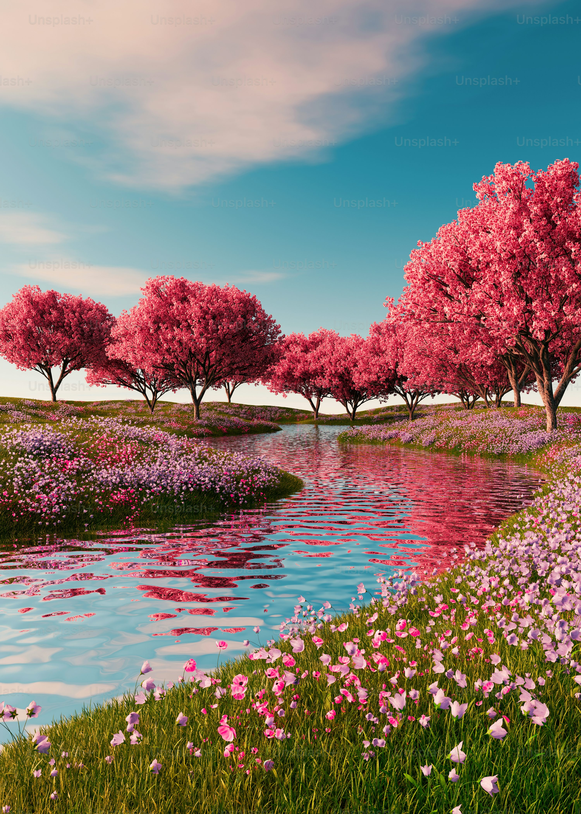

seasons
Seasons are divisions of the year marked by changes in weather, temperature, and daylight. These changes result from the Earth’s orbit around the Sun and the tilt of its axis.
- Winter
- Spring
- Summer
- Autumn
Scientific Reason for Seasons
- Earth’s Tilted Axis
- The Earth is tilted at an angle of 23.5 degrees from the vertical.
This tilt does not change as Earth orbits the Sun.
- Earth’s Revolution Around the Sun
- The Earth takes 365.25 days to revolve around the Sun.
As it moves, different parts of the Earth receive varying amounts of sunlight.
When a hemisphere tilts toward the Sun, it gets more sunlight → warmer → Summer.
When a hemisphere tilts away from the Sun, it gets less sunlight → colder → Winter.
Winter

Starts: Around December 21
Ends: Around March 20
Key Features:
Coldest season.
Shortest days and longest nights.
Snow in many regions.
Some animals hibernate.
more about winter season
Summer
tarts: Around June 21
Ends: Around September 22
Key Features:
Hottest season.
Days are longest, nights are shortest.
Many fruits ripen.
Common time for vacations and outdoor activities.
more about summer season
Spring

Starts: Around march 21 in Northern Hemisphere
Ends: Around June 21
Key Features:
Temperatures start to rise.
Snow melts; rivers and streams fill.
Plants begin to grow and flowers bloom.
Animals come out of hibernation.
more about spring season
Autumn
Starts: Around September 23
Ends: Around December 21
Key Features:
Temperatures begin to drop.
Leaves change color and fall off.
Animals prepare for winter.
Harvest time for crops.
more about autumn season
| Winter |
Summer |
Spring |
Autumn |
| Around December 21 |
Around June 21 |
Around march 21 |
Around September 23 |
Thanks for Visiting